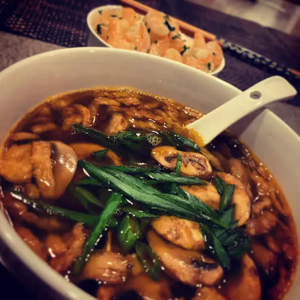

Miso Soup

Description
Miso soup is a traditional Japanese soup consisting of a dashi stock into which softened miso paste is mixed.
Ingredients
- 4 cups water
- 1 (4 inch) piece dashi kombu (dried kelp)
- 1/2 cup bonito flakes
- 1/2 (12 ounce) package tofu, cut into chunks
- 1 teaspoon dried wakame
Steps
- Heat water in a large pot over low heat. Add kombu and cook until the mixture just begins to simmer. Stir in bonito flakes until combined. Remove pot from the heat and let dashi sit, uncovered, for 5 minutes. Strain and set aside.
- Heat 3 1/2 cups dashi in a pot over medium heat. Add tofu and wakame; stir to combine. Remove 1 cup warmed dashi to a small bowl and whisk in miso paste.
Pour miso mixture back into the pot with remaining dashi. Stir until warmed through. Serve garnished with chopped green onions.